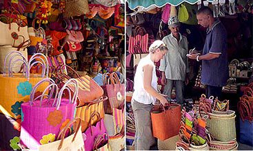
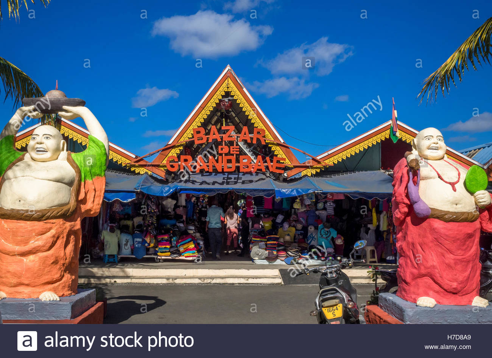
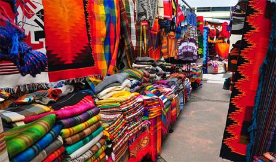
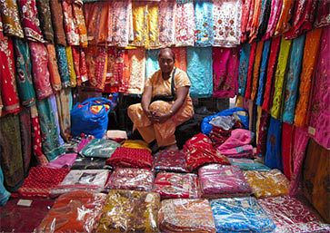
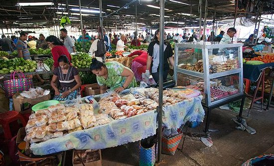
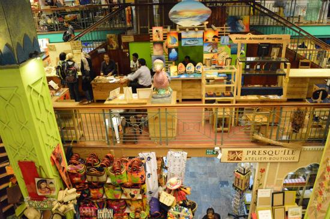
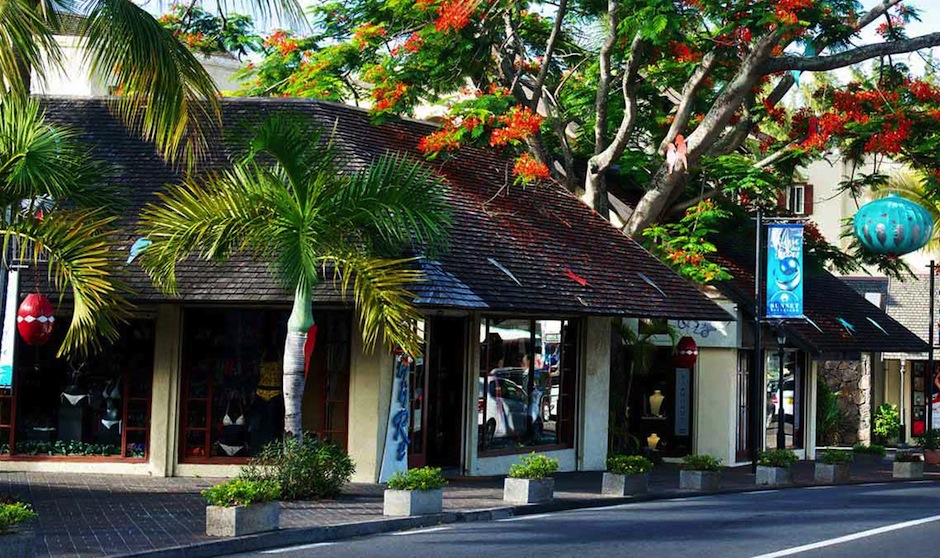
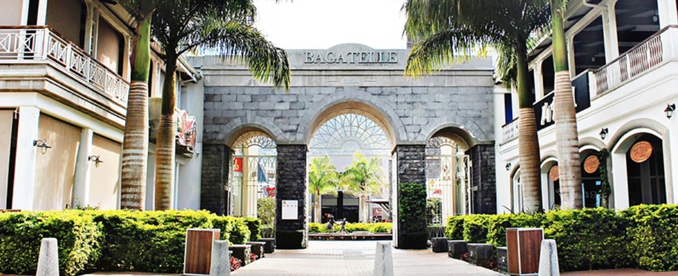

Port Louis Central Market
The Central Market of Port-Louis (also known at the Port Louis Bazaar) is one of the most crowded markets in Mauritius and the most visited market by tourists. The Port Louis market is the best place to purchase local made products and for trying local made foods. The things on sale here are cheap and the market brings you close to the local life in Mauritius. The market is a very a popular meeting point of locals and tourists.
Grand Baie Bazar
Shopping mall in Grand-Baie
Hours: Monday 9am–5pm
Hours: Sunday Hours:
Phone: 5772 6615
Quatre Bornes Market
The Quatre Bornes market situated at the very center of Quatre Bornes on the St. Jean Street, is very popular with tourists and locals alike. The market specializes in textiles and clothing including souvenir T shirts, fabrics sold by meter, suits, casual wear and many more.
Hours: Tuesday to sunday 8am–4am
Address: Quatre Bornes
Mahebourg Market
The Mahebourg market is a unique market which is open only once a week on Mondays.On this day the entire area surrounding the Mahebourg Waterfront area is transformed into a huge open air flea market where you can find many great bargains, local handcrafts and fantastic souvenirs of Mauritius.
Goodlands Market
Goodlands is a street for good shopping, reasonable prices and good value for money. Affordable clothes, accessories and jewellery.
Shopping Mall
Le Caudan Waterfront
Le Caudan Waterfront is a commercial development in Port Louis, the capital city of Mauritius. It includes shops, banking facilities, casinos, cinemas, restaurants, a marina and a five star hotel
Address: Marina Quay, Caudan, Port Louis
Hours: Monday 9:30am–5:30pm to saturday (sunday closed)
Sunset Boulevard
Sunset Boulevard is the oldest shopping mall in Mauritius. You can find international and Mauritius brand. If you enjoy shopping by the sea, Sunset Boulevard is a good destination.
Hours: Monday 8am–10pm
Phone: 263 9602
Bagatelle Mall
Bagatelle Mall is the leading shopping and retail destination in Mauritius. Its dominant presence and comprehensive retail and leisure options attract diverse shoppers from all over the island. Bagatelle Mall merges the world's most desirable brands, shopping convenience, entertainment, and everyday leisure, all in a majestic setting. Bagatelle Mall hosts the widest selection of specialty stores in Mauritius - there are 155 shops - thus offering the most comprehensive and compelling lifestyle shopping experience on the island. The spacious Food Court also gives hungry shoppers plenty of mouthwatering options.
Hours: Tuesday to sunday 8am–4am
Phone: 468 8555
Address: Moka